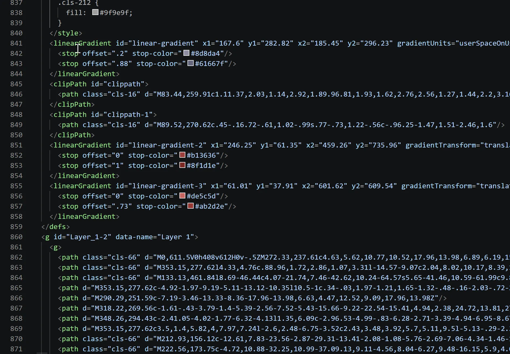
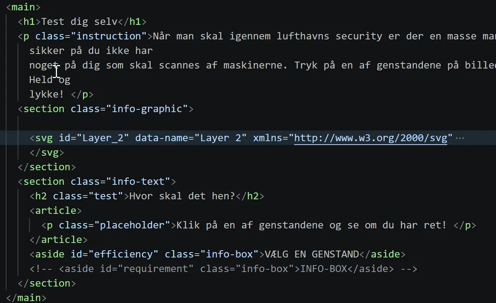
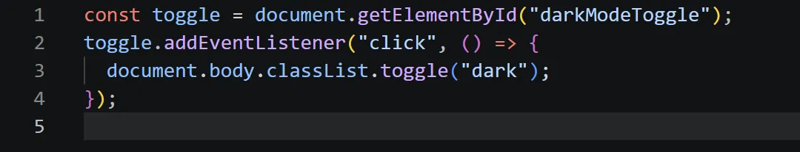

Tema 4 - Brugergraensefladeudvikling
Hvad lavede jeg?
I tema 4 lærte vi for alvor at arbejde med JavaScript. Opgaven var at lave et Emergency site, med en interaktiv infografik lavet i Adobe Illustrator. Sitets fundament fik vi udlveret, og vi skulle derefter opbygge et site om hvad man skal gøre i den valgte nødssituation.



Processen
Vi startede alle med at vælge en nødssituation, men jeg havde svært ved at finde en der var unik og motiverende for mig. Jeg snakkede med en underviser og vi kom frem til det ikke behøver at være en nødssituation, men i stedet et info site, som en bruger kan henvende sig til. En stor del af processen var at udvikle en infografik, som brugeren kan interegere med og som kan hjælpe dem, eller i mit tilfælde, være informerende.
Jeg blev introduceret til:
- JavaScript som er interaktiv
- Adobe Illustrator, vektorer og SVG'er
- HTML Forms
Jeg lærte:
- At tegne en grafik i Illustrator
- At gøre grafikken interaktiv
- At lave Darkmode på et site
- At bruge fieldset og forms
Refleksioner:
- Layers i Illustrator er super vigtigt i en SVG
- interaktiv SVG kræver man tænker fremmad
- Hold Illustrator grafik simpel, for ikke at overkomplicere koden